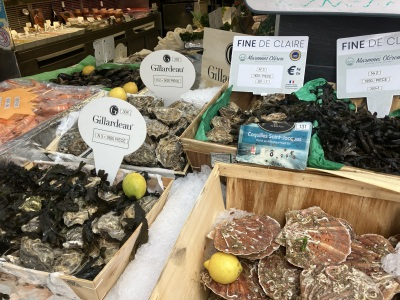
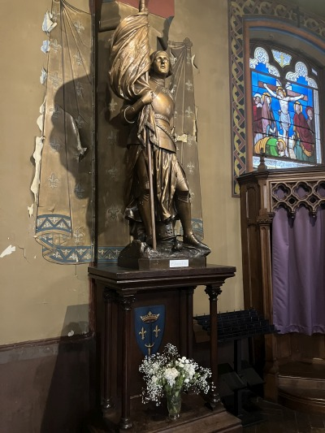
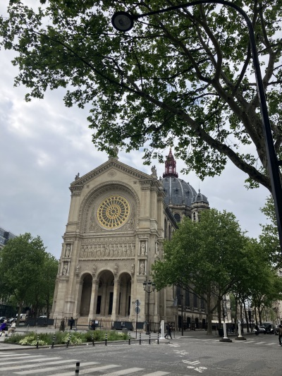
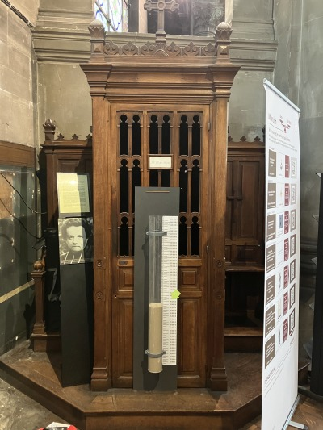

 Paris has exquisite sidewalk food displays |
 St. Joan of Arc greets me again in a random Parisian church before I leave her country |

A French pilgrim at Sainte-Baume reminded me to visit St. Augustine church, where St. Charles de Foucauld had the experience in the confessional that completely changed his life. |
|---|---|---|
|
St. Joan of Arc keeps guard outside St. Augustine |

The confessional where Charles returned to the Faith; the photo is of his confessor, Fr. Huvelin |
The eternal flame at the Arc de Triomphe that commemorates France's war dead. A reminder that, both in the spiritual and temporal life, the struggle is at times difficult, at times costly, but necessary for lasting peace. |